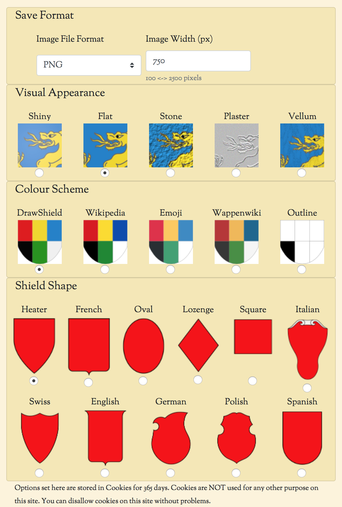

DrawShield offers some control over the visual appearance of the shield image. The options for this can be selected on the main "create" page by clicking on the "Drawing Options..." button, this brings up the following, which I hope is self explanatory.
Note that if you change any of these options (and have cookies enabled) then your choices will be preserved between sessions. You can safely disallow cookies for this site if you do not want this behaviour.
In addition to setting options using the form there is also a facility to specify these options by a (non-standard) extension to the blazon itself. These are described in detail on the Drawing Options Extension page.
Palettes are simple text files consisting of the tincture name, an equals sign and a hex code, one per line with no whitespace. If you have a palette that you would like to have added just e-mail an appropriate file to me. The default tinctures are provided below as an example, cut and paste this into your own file and modify as required. Any tinctures not given will be drawn using the DrawShield default colours.
or=#EFD807 azure=#1E7FCB vert=#149414 gules=#E21313 argent=#F0F0F0 sable=#050505 purpure=#965578 // additional tinctures murrey=#8C004B sanguine=#850606 carnation=#FEC3AC brunatre=#7E0001 cendree=#848484 rose=#FF006E bis=#F1E2BE celestial-azure=#96C8F9 senois=#8D4024 tenne=#A75502 orange=#FAA401 //Other decorative parts charge-stroke=#696969 ordinary-stroke=none pattern-stroke=none division-stroke=none // For sports fields white-line=#FFFFFF // Error colour gray=#888888 // Additions by https://www.reddit.com/user/Mysterious_Italy iron=#bcbcbc bronze=#c28039 copper=#ba702f lead=#6b949e steel=#bdbdbd white=#ffffff // other heraldic authorities buff=#f0dc82 red-ochre=#890520 yellow-ochre=#ccaa2b crimson=#850606 //same as sanguine